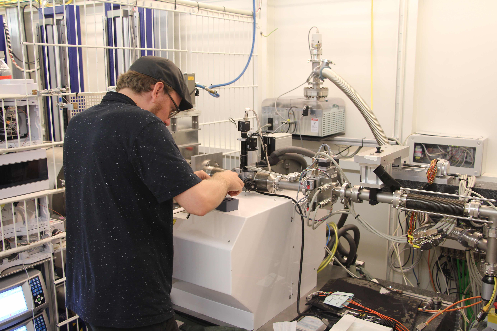

News
Autumn 2017: Beamtimes
This summer and autumn has been very productive, with many visits to large-scale facilities all over the world. Martin S., and Lasse kicked off the beamtime runs with a visit to the BioSAXS (P12) beamline at DESY in Hamburg, Germany. The picture is of Lasse loading samples in the robot sample-changer. Søren, Nicolai, Andreas, and Raul have been to FRM-II in Munich, Germany to perform small-angle neutron (SANS) experiments using contrast variation. Andreas, Raul, and Søren has been to PSI, Switzerland to collect neutron scattering data. Erik, Martin S., and the LINX team have also been to FRM-II as part of the industry outreach projects. Lastly, Nicholas, Søren, Martin N. and Lasse went to APS at the Argonne National Laboratories in the USA to do time-resolved SAXS experiments. The scene is now set for a nice winter of data analysis!

April 2017: Group Day!
This years Group Day has been successfully held. It was a very productive day with presentations from everybody, and communal discussions about research results or obstacles to overcome. The day ended with dinner and a social event. The picture is of the lunch - with traditional danish smørrebrød - where the sun was out.